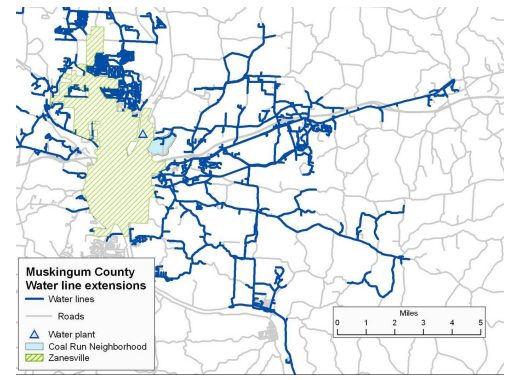
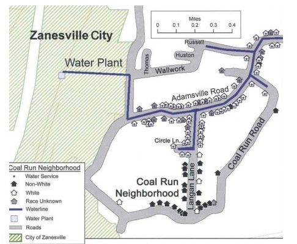

برای بیش از ۵۰ سال، درحالیکه دسترسی به آب تمیز از شهر زنسویل در سراسر منطقه Muskingum گسترش یافت، ساکنان منطقه آفریقایی - آمریکایی زنسویل، اوهایو تنها قادر به استفاده از آب باران آلوده یا حرکت بهسوی نزدیکترین آب انبار برای حمل آن به خانههای خود بودند. بعد از سالها نبرد قانونی، یکی از مدارک کلیدی مورداستفاده در طول جریان پرونده کِنِدی علیه شهر زنسویل نقشهای بود که از داده باز شرکت آب گرفته شده بود و خانههای متصل به خط آب و دادههایی را آشکار میکرد که جمعیتشناسی شهر را نشان میداد. دیدگاههای حاصل از این نقشه، همبستگی معناداری را بین خانههای اشغالشده توسط ساکنان سفیدپوست زنسویل و خانههای متصل به خط آب شهری نشان داد، و این پرونده به نفع شاکیان آفریقایی-آمریکایی پیش رفت و به آنها ۱۰.۹ میلیون دلار غرامت پرداخت شد.
- دسترسی به داده باز، همراه با دیگر شکلهای داده، میتواند منجر به بینشها و شواهد مهمی از شرایط موجود و حاکم و چگونگی تأثیر آنها بر جوامع مختلف شود - در این مورد، نابرابریهای سیستمیک برجسته میشوند.
- آگاهی از داده باز اولین گام مهمی است که ممکن است نادیده گرفته شود، بهخصوص اگر ذینفعان بهطور خاص واقف به فنآوری داده نباشند.
- درصورتیکه دادهها تأثیر منفی بر مالکان مجموعه دادهها داشته باشند، آنها ممکن است موانع جدید (یا بهطور دقیقتر اجرای موانع موجود) برای دسترسی را اضافه کنند.
- سودمندی و ارتباط داده باز را میتوان زمانی تقویت کرد که مجموعه داده با داده جمعآوریشده از طریق جمعسپاری یا نظرسنجی تکمیل شود.
۱. پیشینه و زمینه
برای دههها، ساکنان محله Coal Run در زنسویل اوهایو - که یک محله عمدتاً آفریقایی-آمریکایی است - علیرغم زندگی در یک مایلی خطوط آب عمومی، از خدمات عمومی آب محروم بودند. این وضعیت به سال ۱۹۵۶ باز میگردد، زمانی که هیئتمدیره آب که اکنون منحل شده است از گسترش خدمات به بخشهایی از Coal Run خودداری کرد. همانطور که برخی ساکنان در مقاله نیویورکتایمز در سال ۲۰۰۸ توضیح دادند، آب «جایی که حضور مردم سیاهپوست دیده میشد» متوقف شد.

بسیاری از ساکنان مجبور شدند تا برای تأمین آب به اقدامات افراطی تکیه کنند. بهعنوانمثال، آنها باید از پمپهای الکتریکی برای بازیابی آب از مخزنی که با حیوانات و پسماندههایی از ذخایر زغالسنگ قدیمی آلوده شده بود، استفاده میکردند. به دلیل آلودگی، بسیاری از ساکنان حتی نمیتوانستند از آب استفاده کنند و زمان و پول را صرف حمل آب میکردند. دیگران آب باران و برف را در زمستان با استفاده از سطل جمعآوری میکردند.
این وضعیت نهتنها بار روزانه بر ساکنان تحمیل میکرد، بلکه تحقیرآمیز و توهینآمیز بود. یک وکیل مثال زیر را ذکر کرد که نابرابریهای نژادی در توزیع آب را آشکار میکند:
«یک مرد … کل صبح را صرف تلاش برای تامین آب یا مقابله با کمبود آب کرد. در همین حال، یکی از همسایگان سفیدپوست خود را میبیند که چمنهایش را آبیاری میکند. مشخص شد که اگر شما سفیدپوست بودید و در خارج از زنسویل زندگی میکردید، به آب دسترسی داشتید، اما اگر سیاهپوست بودید، آبی نخواهید داشت».
در سال ۲۰۰۲، حدود بیست نفر از ساکنان سیاهپوست Coal Run شکایتی را به کمیسیون حقوق مدنی اوهایو تسلیم کردند و گفتند که به دلیل نژاد از خدمت محروم شدهاند. سال بعد، این کمیسیون «علت احتمالی» تبعیض را پیدا کرد و یک ماه بعد، مقامات بخش Muskingum اعلام کردند که آب را به Coal Run گسترش خواهند داد تا در سال ۲۰۰۴ این اقدام تکمیل شود.
بااینحال، تصمیم برای گسترش خطوط آب پایان نبرد را مشخص نکرد. در سال ۲۰۰۵، پس از تکمیل ساخت خطوط آب جدید، ۶۷ نفر از ساکنان محله Coal Run شکایت کردند و ادعا کردند که شهر زنسویل و سازمان آب شرق Muskingum بیش از ۵۰ سال است که از ارائه خدمات عمومی آب به آنها خودداری کردهاند، تنها به این دلیل که آنها در یکی از محلههای آفریقایی-آمریکایی در یک ایالت تقریبا سفیدپوست زندگی میکردند. در سرشماری سال ۲۰۰۰ ماسکینگوم، مشخص شد که تنها ۹۳.۹ درصد جمعیت این شهر سفیدپوست بودند که به این معنی است که سیاهپوستان تنها ۴ درصد از ایالت را تشکیل میدادند.
این پرونده در نهایت توسط شرکت قانونی حقوق مدنی Relman، Dane و کولفکس، مستقر در واشنگتن دیسی، مطرح شد. در سال ۲۰۰۸، پس از یک محاکمه سهساله، یک هیئتمنصفه فدرال احکامی در مجموع مبلغی در حدود ۱۱ میلیون دلار برای شهر زنسویل صادر کرد. این مطالعه موردی به بررسی استفاده نوآورانه از دادههای عمومی میپردازد که به ایجاد پرونده موفق و در این فرآیند رسیدگی به نقض چندبن دهه حقوق مدنی منجر شد.
۲. توصیف و آغاز پروژه
برای تعیین اینکه آیا رابطهای بین نژاد و دسترسی به خدمات عمومی آب در محله Coal Run وجود دارد یا خیر، وکلای شاکی، جان رلمن و رید کولفکس، خدمات جمعیتشناسی دکتر آلن پارنل از موسسه جوامع پایدار Cedar Grove را به دست آوردند. موسسه Cedar Grove یک موسسه غیرانتفاعی در Mebane، کارولینای شمالی است که کمک فنی، تحلیل و آموزش را برای کمک به گروههای اجتماعی برای ترویج توسعه عادلانه جامعه فراهم میکند. این شرکت از شرکت انتفاعی McMillan و Moss، شرکت تحقیقاتی، که «تحقیقات و تحلیلهای آن در موارد مربوط به حقوق مدنی، وامدهیهای غارتگرانه، تفکیک نژادی در مدارس، تبعیض نهادینهشده و توسعه اقتصادی جامعه موردنیاز بود» شکل گرفت. آقای کولفکس بر اساس توصیه جنیفر کلار – که به دلیل شهرت موسسه Cedar Grove برای کار در موارد حقوق مدنی و توسعه جامعه، به دکتر پارنل رسید و در طول یک کنفرانس با دکتر پارنل ملاقات کرد - در حال حاضر شریک جونزدین، رلمن و کولفکس است. خانم کلار، و همچنین وکلای حرفهای شرکت حقوقی Jones Day و دیگر سازمانها نیز با آقای رلمن و آقای کولفکس در این پرونده همکاری کردند.
بهعنوان وکلای حقوق مدنی، رلمن و کولفکس بهخوبی از چگونگی کمک دادههای عمومی به ارائه شواهد مهم در پروندهها آگاه بودند، اما فاقد دانش فنی برای تحلیل خود دادهها بودند. پارنل، یک متخصص مشهور داده عمومی، بهطور منظم بهعنوان یک شاهد متخصص در پروندههای حقوق مدنی با استفاده از داده باز عمل میکند. برای مثال، او یکی از کارشناسان شاکی در دپارتمان مسکن و امور اجتماعی تگزاس در برابر پروژه جوامع فراگیر بود. تصمیم دادگاه عالی در سال ۲۰۱۵ اعتبار موارد صحت نابرابری را تائید کرد که در آن دادههای عمومی کلید اصلی هستند. بنابراین، پارنل تحقیق و تحلیل داده برای رلمن و کولفکس را رهبری کرد و در نهایت استراتژی ترکیب داده از منابع متعدد (داده GIS عمومی، داده قبض آب و دادههای جمعیتی) را برای ایجاد نقشههایی که الگوی مشخصی از تبعیض نژادی را ایجاد میکنند، اتخاذ کرد.
رلمن و کولفکس با استراتژی پارنل در استفاده از داده عمومی موافق بودند. بااینحال، وقتی این تصمیم گرفته شد، پارنل خیلی زود متوجه شد که داده سرشماری به دلیل اندازه کوچک محله موردنظر و پراکندگی ساکنان در این بلوکها مؤثر نخواهد بود. بهعنوانمثال، در هر بلوک، بخش شمالی معمولاً سفید و بخش جنوبی عمدتاً غیرسفید بود.
پارنل بهجای استفاده از داده سرشماری، پیشنهاد استفاده از داده سیستمهای اطلاعات جغرافیایی (GIS) که از شهرستان Muskingum برای انجام تجزیهوتحلیل خانه به خانه در این محله در دسترس عموم بود را داد. اگرچه داده GIS از طریق پورتال داده باز در دسترس نیست، اما بهطورمعمول با ارائه درخواست در دسترس هستند و پارنل و رید با موفقیت دادههای GIS موردنیاز را از طریق درخواست مستقیم از مقامات استان Muskingum به دست آوردند و این داده در قالب استاندارد و قابلخواندن توسط ماشین فراهم شد. دادههای GIS از موقعیت مکانی-زمانی بهعنوان متغیر شاخص کلیدی استفاده میکنند. پارنل توضیح داد که برای اغلب شهرداریها، باید ابتدا فرم درخواست دسترسی به دادههای GIS را پر کرد، اما اگر بدانید چطور یا از کجا درخواست دسترسی کنید، «داده زیادی در دسترس است». اساساً، ماهیت داده GIS به کاربران اجازه میدهد تا داده را به روشهایی تحلیل و تفسیر کنند که شناسایی، دستکاری و درک روابط، الگوها و روندها را آسانتر میکنند و سپس آن داده را در فرمهایی تجسم میکنند که برای هر کسی (متخصص داده یا غیرمتخصص) برای درک و به اشتراکگذاری آنها (برای مثال، نقشه، کره، گزارش و نمودار) قابلدسترسی باشند. پارنل که در کار با داده GIS باتجربه است، فرصتهای داده GIS را بیشتر از آنهایی که تجربه کمتری دارند مانند وکلا تشخیص میدهد. بااینحال، اگر حرکت داده باز به رشد خود ادامه دهد، افراد بیشتری از همه زمینهها میتوانند داده GIS را تشخیص داده و از آن استفاده کنند.
دادههای جزئی (Parcel) - که تمام خانههای اشغالشده در نواحی موردمطالعه، محل خطوط آب با تاریخ ساختوساز، محدودیتهای شهر زنسویل و مکانهای خیابان را شناسایی کرد - ستون اصلی این پرونده را تشکیل میداد. علاوه بر این، رلمن، دین و کولفکس، دادههای قبض آب را به دست آورند که آدرس تمام خانههای دارای خدمات عمومی آب را فراهم میکرد. با در دست داشتن این دادهها، تیم حقوقی پارنل یک تلاش خانهبهخانه را آغاز کرد تا: الف) تائید کند که ملک شناساییشده در دادههای جزئی یک خانه مسکونی اشغالشده بوده است. و ب) ترکیب نژادی و مدت زمان اقامت هر یک از ساکنین در آن مکان بهمنظور مشخص شدن اینکه «هیچ تفاوتی بین افراد با و بدون آب غیر از نژاد وجود ندارد» را تعیین کند.
«هرچه دسترسی به دادهها آسانتر شود و افراد بیشتری بتوانند بدون پرداخت هزینه به دادهها دسترسی پیدا کنند، جامعه برابرتری خواهیم داشت».
– تارا رمچدانی، رلمن، دین، و کولفکس PLLC
با استفاده از داده GIS عمومی، اطلاعات نظرسنجی خانوارها، اطلاعات شاکی و آدرس خانههای دارای خدمات صدور قبض آب، همکار پارنل، دکتر Ben Marsh، پروفسور جغرافیا و مطالعات زیستمحیطی در دانشگاه Bucknell، لایههای GIS را برای نقشههایی که الگوی مشخصی از تبعیض نژادی را نشان میدهند، ایجاد کردند. پارنل گزارش کارشناسی مورداستفاده در این پرونده را بر اساس نقشهها، اطلاعات نظرسنجی و اطلاعات اضافی گرفتهشده از شاکیان نوشت. در طول محاکمه، رلمن و کولفکس با بازسازی نقشههای پارنل، «لایهبهلایه»، درحالیکه توضیح میدادند که چگونه هر بخش از اطلاعات بهدستآمده و چه چیزی درباره تبعیض دسترسی به آب کشفشده است، هیئت داوران را از طریق اطلاعات موجود در نقشهها بهطور کامل راهنمایی کردند.

در همین حال، کارشناسی که به نمایندگی از وکلای مدافع به نمایندگی از شهر زنسویل، شهرستان Muskingum و سازمان آب شرق Muskingum شهادت میداد، تلاش کرد تا از نقشههای مبتنی بر داده برای حمایت از پرونده مخالفان استفاده کند. بااینحال، کارشناس دفاع، بهطور مؤثری دادهها یا نقشهها را اداره نکرد که منجر به عدم تطابق بین ادعاهای مطرحشده توسط وکلا و اطلاعات نمایش دادهشده شد. دفاعیه از دادههای GIS و سرشماری استفاده کرد تا استدلال کند که نژاد بر افرادی که خدمات آب دارد تأثیر نمیگذارد و مدعی شد که اگر یک خط آب بخشی از آن بلوک سرشماریشده را تقسیم کند، تمام ساکنان یک بلوک خاص سرشماری آب دارند. این امر آشکارا نادرست است و دفاع نتوانست این ادعا را اثبات کند. پارنل با استفاده از همان داده سرشماری، با این ادعا مخالفت کرد و نشان داد که در سال ۲۰۰۰، خطوط آب برای بلوک موردنظر، تنها به ۳۴ شهروند آفریقایی-آمریکایی - که همگی در یک خانه سالمندان زندگی میکردند و ۸۸ درصد جمعیت آنها سفیدپوست بود – خدماترسانی کرده است.
استفاده از داده باز، که در برخی موارد از یک منبع مشابه استخراجشده، برای بیان نکات متناقض از دو طرف یک پرونده قضایی، خطر استفاده انتخابی و شاید دستکاریشده از داده برای هدایت افراد به نتیجهگیری نادرست را نشان میدهد. بااینحال، دفاع نتوانست از دادهها برای ایجاد یک پرونده قانعکننده استفاده کند و در نتیجه به نظر میرسید که «بیانتها» است.
۳. تاثیر
تأثیر استفاده از داده باز در پرونده کِنِدی علیه زنسویل را میتوان بهطورکلی به دو دسته تقسیم کرد: فوری و بلندمدت.
تأثیر فوری آن روشن، محسوس و از بسیاری جهات بسیار مثبت بود. استفاده از داده باز (همراه با نقشهها) در قلب یک استراتژی قانونی قرار داشت که نقض طولانیمدت حقوق مدنی را شناسایی و جبران میکرد. همانطور که پارنل میگوید: برخی از ساکنان سیاهپوست نمیدانستند که «به مدت ۵۰ سال همسایه سفیدپوست آنها یک وان آبگرم داشت، درحالیکه آنها نمیتوانستند شیر آب را باز کنند». داده باز به تجسم و شناسایی غیرانکار یک شکل سیستماتیک از تبعیض کمک کرد که مدتها در بافت زندگی روزمره زنسویل ایجاد شده بود.
خسارات مالی قابلتوجهی نیز مورد ارزیابی قرار گرفت:
هیئتمنصفه فدرال ۱۱ میلیون دلار در برابر شهر زنسویل و سازمان آب Muskingum برای انکار غیرقانونی آب بر اساس نژاد اعطا کرد.
- هیئت ژوری همچنین ۸۰٬۰۰۰ دلار خسارت به انجمن وکلای مسکن عادلانه - نهادی که در ابتدا به شاکیان در مورد شکایات اداریشان قبل از برگزاری کمیسیون حقوق مدنی اوهایو کمک کرده بود - اعطا کرد.
در مجموع، شاکیان واجد شرایط دریافت وجهی بین ۱۵٬۰۰۰ تا ۳۰۰٬۰۰۰ دلار بودند.
تأثیر میانمدت و بلندمدت، درحالیکه از بسیاری جهات مثبت است، تا حدودی کمتر واضح است. از یکسو، استفاده از دادهها و نقشهها، پرونده ایجاد شده توسط شاکیان که محله آنها مدتها از تبعیض رنج برده بود را کمی و محکم کرد. اگرچه شهر زنسویل قبل از اینکه هیئتمنصفه رأی خود را اعلام کند، کار گذاشتن لولههای آب را تمام کرده بود، پرونده مبتنی بر داده که توسط تیم حقوقی ایجاد شده بود، شکایت اصلی را تائید کرد و بهطور بالقوه کاهش توزیع آب گسترده یا ممانعت از خدماترسانی آب به محلههای دیگر را برای مقامات شهرداری دشوارتر کرد، چرا که جوامع یا وکلا میتوانستند این پرونده را در آینده ارجاع دهند.
علاوه بر این، در جولای ۲۰۱۵، وزارت مسکن و توسعه شهری ایالاتمتحده (HUD) قوانین جدیدی را برای قانون مسکن عادلانه سال ۱۹۶۸ اعلام کرد که تبعیض نژادی آشکار و سپس روتین را ممنوع کرد و نیاز به لغو تبعیض نژادی فعال در مسکن داشت. قوانین جدید مستلزم آن است که «شهرها و روستاهای سراسر کشور الگوهای مسکن خود را برای تعصب نژادی بهدقت موردبررسی قرار دهند و نتایج را هر سهتا پنج سال یکبار بهصورت عمومی گزارش دهند. جوامع همچنین باید اهدافی را تعیین کنند که در طول زمان پیگیری میشوند، تا مشخص شود که چگونه آنها جداسازی را کاهش خواهند داد». درحالیکه این نتیجه مستقیم این پرونده نیست، قوانین جدید HUD داده باز بیشتری را ایجاد خواهد کرد که میتواند برای حقوق مدنی و موارد مسکن عادلانه اعمال شود. شرکتهای حقوقی درگیر در دعاوی حقوقی مدنی اغلب بر GIS یا مجموعه داده باز مشابه برای شواهد در انواع موارد، از جمله مسکن عادلانه، تفکیک مدارس، توسعه مجدد و جابجایی، سو استفاده از اجرای قانون و ارائه خدمات نابرابر تکیه میکنند. داده به روشن کردن جغرافیای سیاسی محلی کمک میکند و «پیوندی به تنوع اطلاعات تصمیمگیری سیاسی، مانند رابطه نژاد با نزدیکی سایتهای ابرصندوق» را فراهم میکند. در پروندههای وامدهی تبعیضآمیز و غیرقانونی، داده باز وکلا را قادر میسازد تا تعیین کنند که وام از بانک به کجا میرود و آیا وام به محلههای اقلیت داده میشود یا خیر. با توجه به قوانین جدید HUD، وکلای حقوق مدنی که نماینده پروندههای مسکن عادلانه هستند، دادههای بیشتری برای شناسایی و اثبات الگوهای تبعیض خواهند داشت و گروههای حقوق مدنی این تصمیم را بهعنوان «پیشرفتی مهم در مورد آنچه که یکی از پرخطرترین مرزهای پیشرفت نژادی بوده است» تحسین میکنند.
بااینحال، علیرغم این پیشرفتهایی که در نتیجه تحقیقات انجامشده توسط پارنل (و دیگران) حاصل شد، به شکلی متناقض، به این نتیجه منجر شد که بهطور کلی داده باز در جامعه و در میان مقامات استان Muskingum، پیشرفت کمی داشته است. در واقع، شاید به این دلیل که این پرونده ۱۱ میلیون دلار هزینه داشت و تبلیغات منفی قابلتوجهی داشت، عواقب آن در بسیاری از موارد دسترسی سختتر و عرضه داده مشخص شده است. بهعنوانمثال، پارنل متوجه شد که داده GIS عمومی از شهرستان Muskingum - که اگرچه بهصورت آنلاین نبود، قبلاً از طریق یک تلفن ساده یا درخواست فرم در دسترس بود، اما در این پرونده پیدا کردن و دسترسی به آنها چالشبرانگیزتر شد و نیازمند تماسهای تلفنی و فرمهای بیشتر و اغلب مهارتهای یک وکیل یا فردی آشنا با اداره امور اداری بود. پارنل نیز مشکلات مشابهی را در به دست آوردن اطلاعات آب و فاضلاب در شهرداریهای خاص کالیفرنیا و کارولینای شمالی تجربه کرده است و مقامات رسمی حکم دادهاند که تنها اشخاص ثالث ضروری، مانند شرکتهای مهندسی، ممکن است به چنین دادههایی دسترسی داشته باشند. فرآیند به دست آوردن دادههای GIS تا حد زیادی در بین دولتها - از نظر موقعیت و سطح - متفاوت است، اگرچه پارنل مشاهده کرد که این افزایش در مراحل دسترسی به دادههای GIS پس از حملات ۱۱ سپتامبر ۲۰۰۱ حتی بیشتر آشکار شد، زیرا متولیان داده در اشاره به نگرانیهای امنیتی برای به تأخیر انداختن دسترسی، آزادی بیشتری داشتند. متأسفانه، پارنل معتقد است که کشف انگیزههای واقعی پشت این اقدامات، درصورتیکه در واقع برای ممانعت از دعاوی حقوقی و / یا پنهان کردن اشتباهات بالقوه باشد، زمان و منابع زیادی را هدر میدهد.
در چندین مورد، این محدودیتها در دسترسی به دادهها به نام امنیت توجیه شدند. برای مثال، مقامات شهرستان گفتند که باز کردن کامل داده زیرساخت، برای مثال با انتشار آنلاین آن در فرمت قابل دانلود، یک تهدید امنیتی بالقوه ایجاد میکند که به تروریستها اجازه میدهد تا اهدافی مانند نیروگاههای آب یا انرژی را پیدا کنند. بااینحال، پارنل استدلال میکند که ازآنجاکه پیدا کردن این نوع اطلاعات مکانی بدون دسترسی به داده GIS دشوار نیست تنها فرد باید انگیزه داشته باشد؛ بنابراین این تغییرات سیاست ممکن است در صورتی که منجر به شفافیت کمتر و کاهش دسترسی به داده عمومی شود، نیاز به ارزیابی مجدد داشته باشند.
۴. چالشها
این نتایج پایینتر از حدانتظار پرونده کِنِدی در برابر زنسویل به برخی موانع مکرر اشاره میکند که طرفداران داده باز با آنها مواجه هستند. بهطور خاص، استقرار امنیت بهعنوان توجیهی برای محدود کردن دسترسی به اطلاعات، همانطور که چندین مطالعه موردی دیگر در این مجموعه نشان میدهند، نسبتاً رایج است.
بهطورکلی، مورد زنسویل سه چالش را برای توزیع گسترده و انتشار داده باز پیشنهاد میکند:
نگرانیهای امنیتی
پس از حوادث ۱۱ سپتامبر ۲۰۰۱، نگرانی در مورد امنیت، اغلب توسط متولیان داده مطرح میشود. اینها میتوانند خود را در ظاهر نگرانی در مورد امنیت ملی، امنیت دادهها یا دیگر اشکال امنیت بیان کنند. البته این نگرانیها اغلب ماسکی برای پوشاندن دلایل پنهانی دیگر (برای مثال، تمایل به محدود کردن تبلیغات منفی یا اجتناب از دعاوی حقوقی) هستند. همانطور که پارنل، که با مقامات در سراسر طیف شفافیت، در شهرستانهای سراسر کشور سروکار داشته است، توضیح میدهد، «یا میتوانید داده خود را پنهان کنید یا میتوانید همه چیز را درست کنید».
بااینحال، با کنار گذاشتن اعتبار امنیت بهعنوان توجیهی برای محدود کردن دسترسی، گامهایی وجود دارد که حامیان داده باز میتوانند برای کاهش این نگرانیها بردارند.
آگاهی و قابلیت استفاده
داده باز یک راه قدرتمند برای مبارزه با تبعیض (و دیگر بیعدالتیهای مختلف) ارائه میکند، اما مانند همه فنآوریها، این داده تنها یک ابزار است که پتانسیل آن به این صورت تعریف میشود که تا چه حد قابلاستفاده است و در واقع مورداستفاده قرار میگیرد. بهطور مکرر، ما نمونههایی را میبینیم که در آن دادهها در دسترس قرار میگیرند اما به دلیل عدم آگاهی یا موانعی برای قابلیت استفاده، کمتر مورداستفاده قرار میگیرند. یک الگوی مشابه در زنسویل بسیار مشهود بود، جایی که داده در نهایت برای چنین موفقیت بزرگی در طرح دعوی به کار گرفته شد، در واقع سالها در دسترس بود اما ساکنان قادر به استفاده از آن نبودند.
همانطور که Tara Ramchandani، وکیل رلمن، دین و کولفکس توضیح میدهد:
از کجا میدانید که از خدمات آب محروم شدهاید اگر ایتدا باید آگاهی داشته باشید که باید دادهها را به دست آورید و سپس یک وکیل برای به دست آوردن اطلاعات و استفاده از آنها استخدام کنید؟ ااین عادلانه نیست. هرچه اطلاعات بیشتری در دسترس باشند (در قالبهای سادهشده)، راحتتر میتوانید درک کنید که چه اتفاقی برای شما میافتد و میتوانید تجربه خود را در زمینه جمعیت اطراف خود قرار دهید.
او اشاره میکند که حتی وکلا، که ممکن است از این نوع دادهها بهطور منظمتر از شهروندان عادی استفاده کنند، اغلب باید به کارشناسان تکیه کنند تا مشخص کنند کدام مجموعه دادهها مفید هستند و چگونه به آنها دسترسی داشته باشند. علاوه بر این، داده باز اغلب زمانی مفید است که با دیگر شکلهای داده جزئی یا اختصاصی ترکیب شود (برای مثال، در این مورد، داده GIS عمومی باز و رایگان با نظرسنجی خانهبهخانه زنسویل ترکیب شد که توسط تیم پارنل برای تائید نژاد ساکنان در محله انجام شد). مهارتهای فنی پیچیده و دیگر مهارتهای موردنیاز برای دسترسی و ترکیب دادهها اغلب برای شهروندان عادی دور از دسترس هستند. همانطور که رامچاندری میگوید: «هرچه دسترسی به داده آسانتر باشد و هرچه افراد بیشتری بتوانند بدون پرداخت هزینه به داده دسترسی داشته باشند، جامعه برابرتری خواهیم داشت».
بنابراین طرفداران داده باز باید ابتدا آگاهی نسبت به داده باز را افزایش دهند، زیرا «اهرگز به ذهن اکثر مردم نمیرسد که این اطلاعات وجود دارند». گروهها و شرکتهای حقوق مدنی بهطور خاص باید در کمپینهای اطلاعرسانی هدف قرار گیرند و منابعی برای یادگیری نحوه دسترسی، استفاده یا یافتن متخصصان داده باز برای کمک به پشتیبانی از پروندههای خود فراهم کنند.
دادهها - عامل انسانی
داده باز یک ابزار است. پتانسیل واقعی آن ناشی از روشی است که انسانها از آن استفاده میکنند. بدون شک داده نقشی کلیدی در پیروزی در این پرونده داشت، اما یکی از وکلای شاکی از رلمن, دین و کولفکس اشاره کرد که شهادت دادهشده در دادگاه، اگر نگوییم بیشتر از دادهها و شواهد نقشهبرداری، یک عامل مهمی برای پیروزی در این پرونده بود. بهعنوانمثال، شهادت شاکیانی که با زبان خودشان تجربیات تبعیض، سختیهای عدم دسترسی به آب و ناامیدی از درخواست مکرر برای آب و رد شدنشان را توصیف میکنند، داستانی بسیار تکاندهنده و احساسی را برای هیئت منصفه ترسیم کرد. در همین حال، شهادت متهمان و تمام افراد درگیر در تصمیمگیری برای محرومیت از آب مردم، و فرآیند تحقیق برای کشف الگوهای تبعیض در رفتار تصمیمگیرندگان، همچنین یک روایت قوی در دادگاه، کمکی به هیئتمنصفه برای درک کاملتر و ارتباط با تجربیات جامعه بود.
بنابراین، درحالیکه ثابت شد دادهها و نقشهها مهم هستند، شواهد محکم در پرونده شاکیان، جنبههای درونیتر پرونده به توصیف تأثیر جهان واقعی کمک میکند. برای مثال، ساکنان شهر Coal Run، از جمله Doretta Hale ۷۴ ساله، برای اولین بار که آب تمیز از طریق لولهها وارد میشد گریه میکردند و میگفتند: «هر وقت بخواهیم میتوانیم لباس بشوییم … میتوانیم برویم و گلها را آبیاری کنیم».
- اگرچه این چالشی نیست که شاکیان در این مورد تجربه کرده باشند، اما واضح است که بهویژه در شرایطی که شامل طرفداری یا متقاعدسازی است، دادههای در قالب عدد و نمودار تنها میتوانند تاحدی پیش بروند. تجربیات شخصی میتوانند به مثال زدن و مبنا قرار دادن بینشهایی کمک کنند که از طریق داده باز کشف شدهاند و شاید درک و ارتباط با آنها آسانتر باشد.
۵. نگاهی به مسائل پیش رو
اگرچه به نظر میرسد که شهر Muskingum در نتیجه این پرونده، به نحوی در سطح محلی در مقابل داده باز عقبنشینی کرده است، اما امروزه خدمات آب بهطور مساوی به ساکنان ارائه میشود. بهطور گستردهتر، به نظر میرسد که جنبش داده باز در اوهایو در سطح ایالتی در حال رشد است. بهعنوانمثال، دفتر خزانهداری اوهایو، OhioCheckbook.com را راهاندازی کرده است، که یک ابزار آنلاین تعاملی است که به کاربران اجازه جستجو و دسترسی به دادههای مخارج دولت را بهعنوان بخشی از برنامه شفافیت خود میدهد. در همین حال، مجلس نمایندگان ایالتی در حال حاضر در حال کار بر روی لایحهای برای راهاندازی DataOhio است، اقدامی که استانداردهای داده باز و شفافیت را به چند روش ترویج میکند. اول اینکه، سازمانهای دولتی و محلی در اوهایو ملزم به رعایت استاندارد داده باز خواهند بود. همانند پورتال داده باز فدرال و پورتالهای ایجاد شده در سایر ایالتها، DataOhio یک کاتالوگ آنلاین (data.ohio.gov) برای فراهم کردن توصیف مجموعههای داده، برنامههای آموزشی و ابزارها ایجاد میکند. برای کمک به تأمین پشتیبانی مالی برای گسترش فعالیت داده باز، DataOhio همچنین خواستار پرداخت ۱۰۰۰۰ دلار کمک مالی به دولتهای محلی بهعنوان انگیزهای برای ارائه اطلاعات بودجه، نیروی انسانی و جبران خسارت آنلاین در قالب داده باز با استفاده از حسابداری یکنواخت شد. درعینحال، شهر سینسیناتی پورتال داده باز خود را دارد تا «دسترسی به دادههای دولتی، بهبود خدمات، افزایش پاسخگویی و تحریک فعالیت اقتصادی را فراهم کند».
همانطور که اقدامات داده باز شهری و ایالتی بیشتری در سرتاسر اوهایو اجرا میشوند، پتانسیل برای تأثیرات سرازیر شدن اقتصادی (trickle-down) وجود دارد. مقامات دولتی در محلههای کوچکتر مانند زنسویل میتوانند تشویق شوند تا داده باز را بپذیرند و به افزایش آگاهی ساکنان از اثرات بالقوه گسترده دسترسی بیشتر عموم به داده دولت کمک کنند.